University of Cambridge
May 24, 2021
\[ \nonumber \newcommand{\bra}[1]{\langle{#1}\rvert} \newcommand{\ket}[1]{\lvert{#1}\rangle} \newcommand{\br}{\mathbf{r}} \newcommand{\bR}{\mathbf{R}} \newcommand{\bp}{\mathbf{p}} \newcommand{\bk}{\mathbf{k}} \newcommand{\bq}{\mathbf{q}} \newcommand{\bv}{\mathbf{v}} \newcommand{\bx}{\mathbf{x}} \newcommand{\bz}{\mathbf{z}} \DeclareMathOperator*{\E}{\mathbb{E}} \]
\[ \frac{\partial u}{\partial t} = D \frac{\partial^2 u}{\partial x^2} \] - Fundamental solution of heat equation \[ u(x,t) = \frac{1}{\sqrt{4\pi Dt}}\exp\left[-\frac{(x-x_0)^2}{4Dt}\right] \] - More generally have scaling solutions \(u(x,t)\to \frac{1}{\sqrt{t}}f\left(\frac{x-x_0}{\sqrt{Dt}}\right)\) - Dynamical critical exponent \(x\sim t^{1/z}\) with \(z=2\) - \(u(x,t)\) is conserved: \(\int u(x,t) dx=\text{const.}\) —
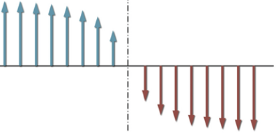
Heisenberg spin-1/2 chain \[ H = \sum_j \left[X_j X_{j+1}+Y_j Y_{j+1}+ \Delta Z_j Z_{j+1}\right] \]
\(\Delta=1\) is isotropic (XXX model). All 3 components conserved
\(\Delta\neq 1\): Only \(Z\) conserved
(Naive) expectation: \(Z\) diffuses. In fact: something’s up at \(\Delta=1\)!
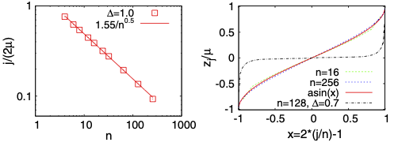
Steady state current \(j\sim L^{-1/2}\). \(j= D\frac{\partial s}{\partial x}\) suggests \(D\sim L^{1/2}\)
\(\omega = Dk^2\) implies \(\omega\sim k^{3/2}\) or \(z=3/2\). Superdiffusion
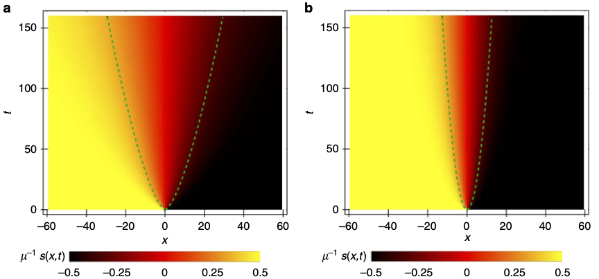
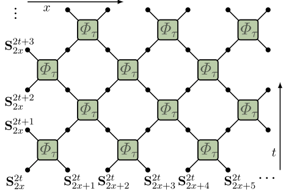
\[ \begin{align} \Phi_\tau(\mathbf{S}_1,\mathbf{S}_2) = \frac{1}{\sigma^2+\tau^2}&\left[\sigma^2 \mathbf{S}_1+\tau^2 \mathbf{S}_2 + \tau \mathbf{S}_1\times \mathbf{S}_2,\\\\ \sigma^2 \mathbf{S}_2+\tau^2 \mathbf{S}_1 + \tau \mathbf{S}_2\times \mathbf{S}_1\right] \end{align} \]
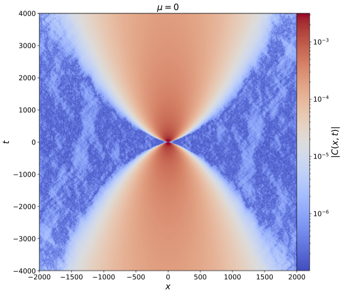
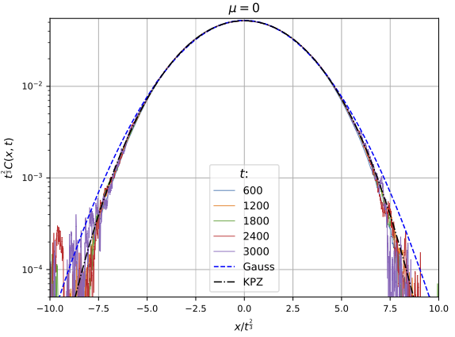
Non-abelian symmetry e.g. \(SU(2)\) not \(U(1)\)
Integrability (extensive number of conservation laws)
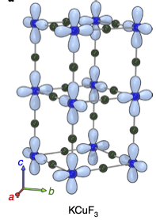
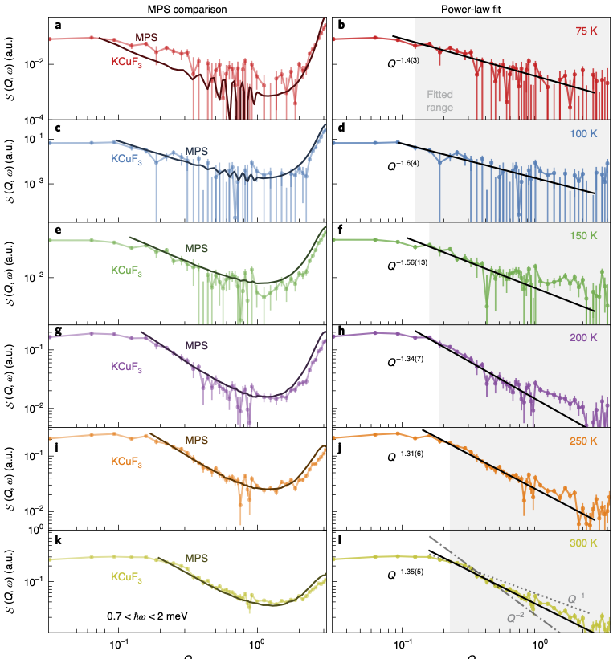
\[ \partial_t h = \partial_x^2 h + \frac{\lambda}{2}(\partial_x h)^2 + \overbrace{\xi(x,t)}^{\text{noise}} \]
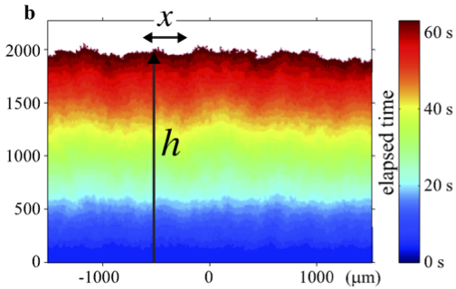
KPZ is related to Burgers equation via \(v=-\partial_x h\) (set \(\lambda=1\)) \[ \partial_t v + v\partial_x v = \partial_x^2 h + \partial_x\xi(x,t) \]
Scale \(x\to \lambda x\), \(t\to \lambda^z t\)
Preserves Galilean invariance: \(\partial_t v+v\partial_x v\) preserved
Steady state \(v\) is white noise (\(h\) is Brownian): \(v\to \lambda^{-1/2}v\)
Must have \(z=1+\frac{1}{2}=\frac{3}{2}\) (Forster, Nelson, and Stephen (1977))
Much recent progress on scaling functions in 1+1 dimensions
Bulchandani (2020) suggests following (classical) picture
Landau–Lifshitz equation for magnetization density \(\mathbf{s}(x,t)\) \[ \partial_t\mathbf{s} = \mathbf{s}\times \partial_x^2\mathbf{s} \]
Regard \(\mathbf{s}(x)=\mathbf{T}(x)\) as tangent vector of space curve, with \(x\) as arc length
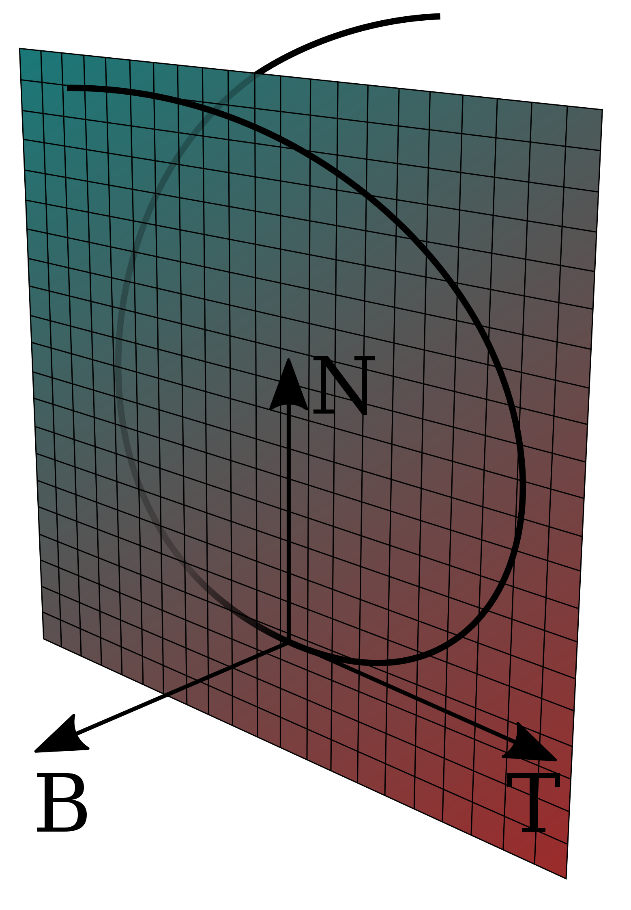
\[ \begin{align} \frac{d\mathbf{T}}{ds}=\kappa\mathbf{N},\qquad {\frac {d\mathbf {B} }{ds}}=-\tau \mathbf {N}\\ {\frac {d\mathbf {N} }{ds}}=-\kappa \mathbf {T} +\tau \mathbf {B} ,\\ \end{align} \]
\[ \begin{align} \partial_t \mathcal{E} +2\partial_x\left(\mathcal{E}\tau\right)&=0\\\\ \partial_t \tau +\partial_x\left(\tau^2-\mathcal{E}\right)&=0 \end{align} \]
Linear instability!
If we can set \(\mathcal{E}=0\) at long scales and coarse graining introduces noise and damping, then
\[ \partial_t \tau +\partial_x\left(\tau^2-D\partial_x\tau+\xi(x,t\right)=0 \]
Fluctuating exchange interaction \[ d\ket{\psi} = \sum_j \left[-i(J dt + dW_j)P_{j,j+1}-\frac{1}{2}dt\right]\ket{\psi}. \] (last term is there to ensure that the norm is preserved)
Heisenberg equation of motion \[ d\mathcal{O} = \sum_j i\left[\left(J dt + dW_j\right)P_{j,j+1},\mathcal{O}\right]+dt\left(P_{j,j+1}\mathcal{O}P_{j,j+1}-\mathcal{O}\right). \]
\[ \begin{equation} \frac{d\bar{\mathcal{O}}}{dt} = \sum_j iJ \left[P_{j,j+1},\bar{\mathcal{O}}\right]+\left(P_{j,j+1}\bar{\mathcal{O}}P_{j,j+1}-\bar{\mathcal{O}}\right) \end{equation} \]
$$ \mathcal{O}= \sum_{\mu_{1:N}=\{0,1,2,3\}^N} \mathcal{C}^a_{\mu_{1:N}}(t) \sigma_1^{\mu_1}\otimes\cdots \sigma_N^{\mu_N}, $$ $$ \partial_t \mathcal{C}_{\mu_{1:N}} = \sum_j \left[J\sum_{\alpha\beta} \epsilon_{\alpha\beta \mu_j \mu_{j+1}} \mathcal{C}_{\mu_1\cdots \alpha\beta \cdots \mu_N} + \mathcal{C}_{\mu_1\cdots \mu_{j+1}\mu_j \cdots \mu_N} - \mathcal{C}_{\mu_1\cdots \mu_{j}\mu_{j+1} \cdots \mu_N}\right] $$
$$ \partial_t \mathcal{C}_{\mu_{1:N}} = \sum_j \left[J\sum_{\alpha\beta} \epsilon_{\alpha\beta \mu_j \mu_{j+1}} \mathcal{C}_{\mu_1\cdots \alpha\beta \cdots \mu_N} + \mathcal{C}_{\mu_1\cdots \mu_{j+1}\mu_j \cdots \mu_N} - \mathcal{C}_{\mu_1\cdots \mu_{j}\mu_{j+1} \cdots \mu_N}\right] $$
\(J=0\) describes operator diffusion
\(J\neq 0\) describes splitting and merging e.g. \(Z_j\leftrightarrow X_jY_{j+1}\)
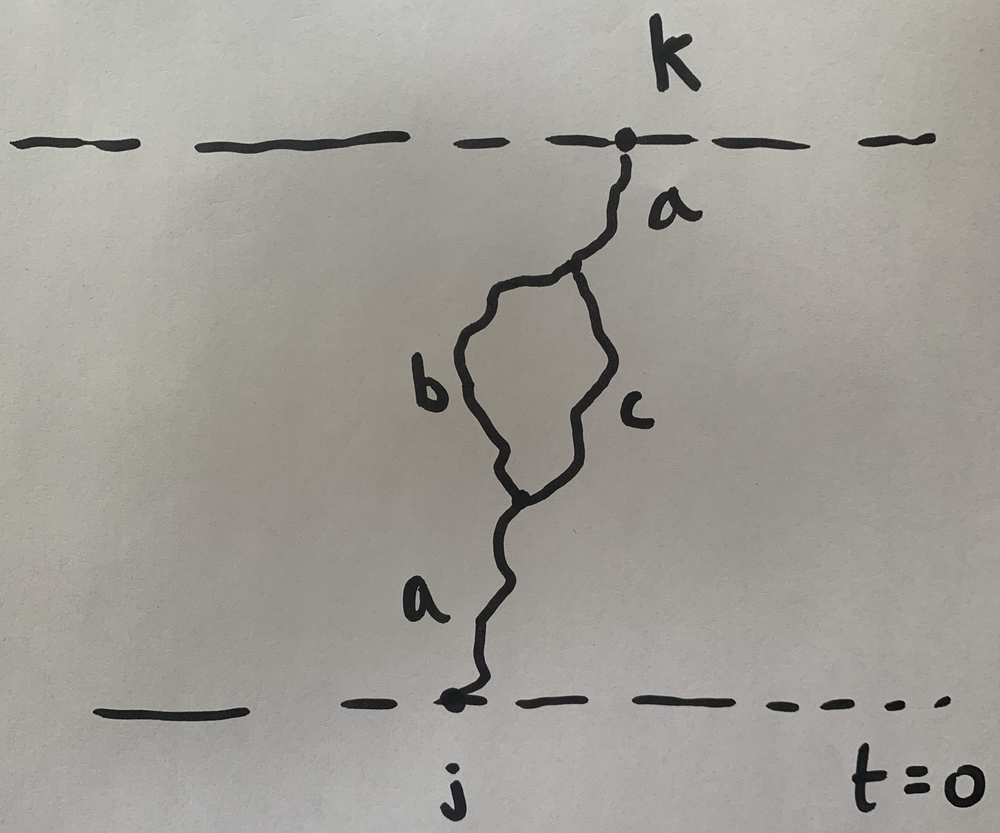